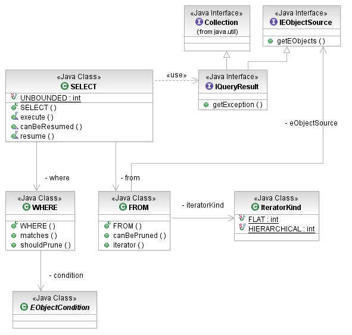
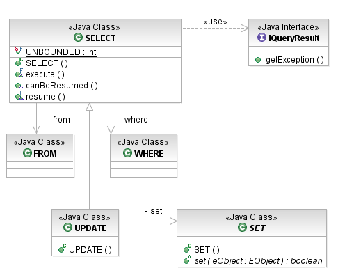

The EMF Model Query Framework provides two kinds of query statements: the SELECT statement and the UPDATE statement. The former retrieves objects matchind a WHERE clause condition. The latter additionally has a SET clause that modifies the objects selected.
The SELECT consists of two clauses: a WHERE clause that determines which objects to select (the filter) and a FROM that provides the objects to be filtered.

[as SVG]
The SELECT statement can additionally be configured with the following parameters:
The FROM clause may be initialized either with a single EObject, a Collection of EObjects, or an IEObjectSource. In any form, the FROM clause defines the scope of the search. It may optionally be configured with an IteratorKind to choose whether the query is a flat iteration of the initial objects or a tree iteration (the default). As SELECT statements are, themselves, IEObjectSources, they can provide the search scope in the FROM clause of a nesting query.
The WHERE clause specifies the filtering condition that selects the objects from the FROM clause that are returned in the query result. It is very simple, initialized only with an EObjectCondition.
Query results are returned by the execute() method as an IQueryResult which is a Collection that also encapsulates an exception. If any exception occurred during the execution of the query, the result will have it in addition to a partial result set (or none).
// to find a name that contains 'Dickens'
Condition dickens = new SubStringValue("Dickens");
// to find a writer whose name is Dickens
EObjectCondition isDickens = new EObjectAttributeValueCondition(
EXTLibraryPackage.Literals.WRITER__NAME, dickens);
// to find a book whose author is a writer named Dickens
EObjectCondition byDickens = new EObjectReferenceValueCondition(
EXTLibraryPackage.Literals.BOOK__AUTHOR, isDickens);
// search from the root of the library hierarchy to find books by Dickens
Library mainBranch = getMainBranch();
IQueryResult result = new SELECT(
new FROM(mainBranch),
new WHERE(byDickens))
.execute();
if (result.getException() != null) {
log(result.getException());
} else {
for (Object next : result) {
System.out.println("Found " + ((Book) next).getTitle());
}
}
The UPDATE statement is in all respects just like the SELECT statement except that it additionally modifies the objects that it finds using a SET clause, and then returns only those for which the SET returns true to indicate that the object was successfully updated.

[as SVG]
The SET clause receives, in the set(EObject) method, each object in turned that is selected, for which the client provides an implementation that mutates the object. Objects that are successfully updated are appended to the query result.
// update books by Dickens to set them all as mysteries
IQueryResult result = new UPDATE(
new FROM(mainBranch),
new WHERE(byDickens),
new SET() {
public boolean set(EObject object) {
((Book) object).setCategory(BookCategory.MYSTERY_LITERAL);
return true;
})
.execute();
if (result.getException() != null) {
log(result.getException());
} else {
for (Object next : result) {
System.out.println(((Book) next).getTitle() + " is now a mystery");
}
}
Copyright (c) 2000, 2007 IBM Corporation and others. All Rights Reserved.